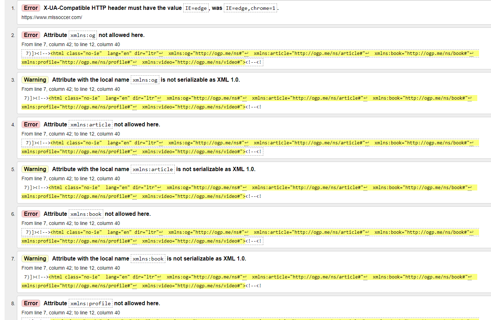
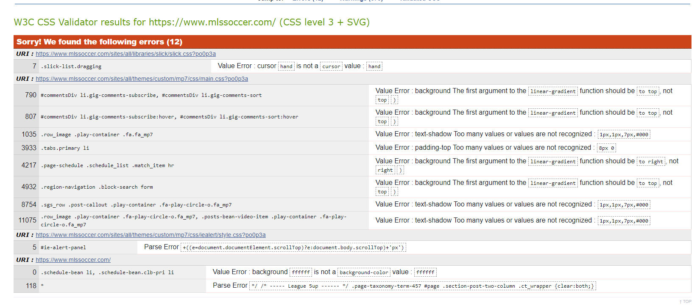
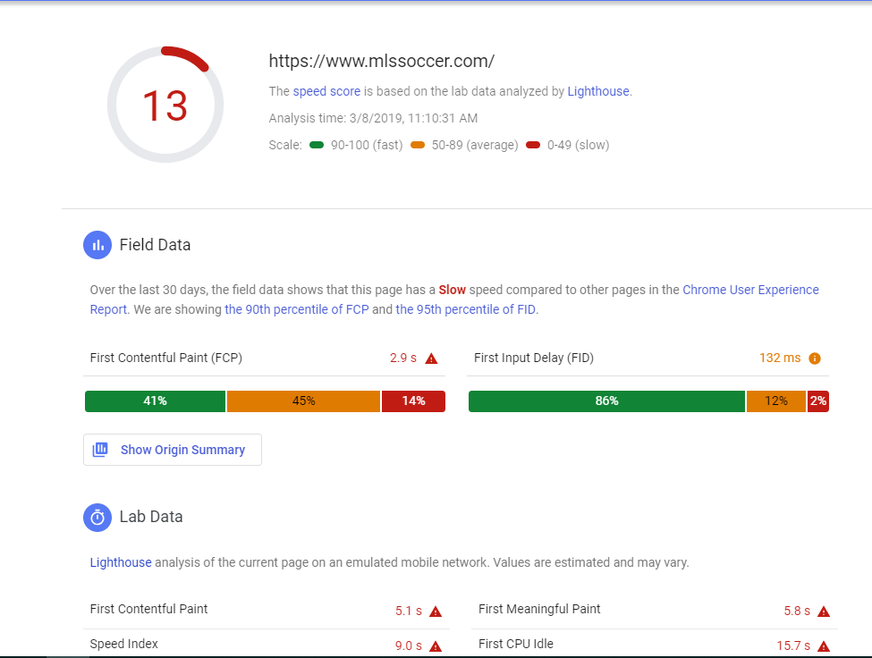

Website passes the W3C validator: FAIL

Recommendations: There's a large amount of errors going on here, almost over 100. The website doesn't really suffer from it though, it's nothing that noticeable. Of the most common errors though is that almost all it's attributes don't have spaces to separate them which would be an easy fix. Every error is related to the attributes pretty much. Some touch up on that would eliminate pretty much all the errors. There's also a couple unclosed div's which also is an easy fix.
Website passes the CSS validator: FAIL

Recommendations: There's 12 CSS errors on the home website, and a lot of the errors are just typos. For some of the errors instead of "to top" they just have to remove "to" and that's what half of their errors are. Besides that they have too many values listed in some places which just need to be removed in order to fix it.
Website status using PageSpeed Insights: Speed Score 13, FAIL

Recommendations: Looking at the speed loss, most of it is due to unused CSS. Which was noticed in the errors as well. There were some extra text that's just not needed, and getting rid of it would save 1.8 seconds for the websites speed. They also use PNG and JPEG for their images which don't compress as well compared to JPEG 2000, JPEG XR, and WebP. Using one of those three for their images would save 23.55 seconds on their websites speed.